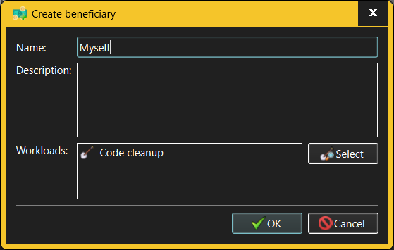

Create/Modify Beneficiary dialog
The same dialog is used for both creating new Beneficiaries and modifying existing
Beneficiaries.

The fields in the Create/Modify Beneficiary dialog allow the user to specify:
- Name - Beneficiaries are identified by short,
descriptive names (such as "Myself", "General public" and so on) which must
be unique within a given workspace.
- Description - if the Beneficiary name is not
self-explanatory, its description may help to clarify its meaning. Multiple
lines of text may be entered here.
- Workloads - a Beneficiary can be associated with one or several
Workloads (i.e. Projects or Work Streams) in which that Beneficiary is a
stakeholder. This
field lists the Beneficiary's associated Projects and Work Streams and provides a Select
button to set up and modify that association as necessary.
Only someone with Administrator or Manage Beneficiaries capabilities is
allowed to create or modify Beneficiaries. However, anyone who can log into a
given workspace can see all Beneficiaries defined there.
See also: -